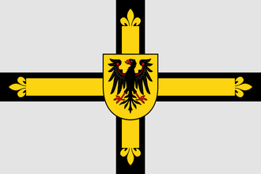
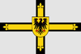
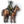

{kind=link}
{kind=link}
{kind=link}
| 伊比利亚 |
| 法兰西 |
| 低地 |
| 不列颠 |
| 北欧及波罗的 |
| 中欧 |
| 北德意志 |
| 南德意志 |
| 意大利 |
| 巴尔干及安纳托利亚 | 创建缩略图出错：文件丢失 罗姆 |
| 东欧 |
 | |
|---|---|
| 条顿骑士团 | |
| 政府等级 | |
| 主流文化 | |
| 首都 | |
| 政体 | |
| 国教 | |
| 科技组 | |
| 条顿骑士团的理念 |
此信息可能已落后版本，最后更新于1.35 ----
|
| +10% 骑兵作战能力 +5% 训练度 |
| +10% 思潮传播
|
|
|


条顿骑士团（英文：Teutonic Order）是一个神权制国家，位于波罗的海沿岸。它成立在第一次十字军东征期间，曾驻扎在阿克，在十字军战士被逐出圣地耶路撒冷后，驻扎在匈牙利-特兰西瓦尼亚一带，直到波兰支持的1230年普鲁士十字军东征中找到了新的目标。到1444年，随着它们基督教化该区域使命的完成，它们开始显得过时并吸引了邻国的注意，特别是  波兰和
波兰和  立陶宛。
立陶宛。
|
|
只适用于DLC北方雄狮激活时。 |
条顿骑士团拥有规模庞大且路线多样的任务。在完成任务“击败波兰”后，条顿骑士团将可以通过事件做出决定，解锁以下不同的路线：
未启用  北方雄狮DLC时，条顿骑士团仅使用欧洲任务。
北方雄狮DLC时，条顿骑士团仅使用欧洲任务。
条顿骑士团有大量的趣味事件；其中有一大部分是与其任务树相关的。
条顿骑士团有一组特殊的事件链——普鲁士联盟事件链，且与其特有  灾难普鲁士联盟直接相关。1450年后，该灾难将有可能将发生，使得骑士团向
灾难普鲁士联盟直接相关。1450年后，该灾难将有可能将发生，使得骑士团向  市民阶层做出重大让步；以
市民阶层做出重大让步；以  但泽代表的普鲁士联盟将随时可能独立建国。
但泽代表的普鲁士联盟将随时可能独立建国。
通过决议“削弱普鲁士联盟”可以终结事件链、避免一切不良后果， 但泽将不会独立。通过该决议要求阶层特权“与普鲁士联盟妥协”未被启用。DLC
但泽将不会独立。通过该决议要求阶层特权“与普鲁士联盟妥协”未被启用。DLC  北方雄狮启用时，需要通过任务完成
北方雄狮启用时，需要通过任务完成
否则，1460年之后，将可能会出现以下两种后果：
事件“普鲁士联盟”会设置国家标识 pru_confederation_flag，从而使得下列决议“
|
|
这条信息可能已不适合当前版本，最后更新于1.30。 |
我们必须终结普鲁士邦联的存在，以免局势失控。绥靖或是镇压，我们必须确定正确的道路。
潜在需求
|
接受
|
效果
| |
AI decision factors:
条顿骑士团可以成立  普鲁士和
普鲁士和  德意志。值得注意的是，该决议是游戏中为数不多的在作为非主权附属国时也能通过的成立国家的决议，而且不会导致离开神圣罗马帝国的后果。DLC
德意志。值得注意的是，该决议是游戏中为数不多的在作为非主权附属国时也能通过的成立国家的决议，而且不会导致离开神圣罗马帝国的后果。DLC  北方雄狮开启时，条顿骑士团可以在选择普鲁士路线的任务树后，忽视成立普鲁士所需的宗教条件。
北方雄狮开启时，条顿骑士团可以在选择普鲁士路线的任务树后，忽视成立普鲁士所需的宗教条件。
|
|
这条信息可能已不适合当前版本，最后更新于1.34。 |
十字军骑士的时代很快淡去，接下来是一个我们不再被宗教法令束缚的时代。同时，大团长也更愿意成为一位公爵或国王。通过改组我们现在的政府，我们可以使我们的管理更有效，并赢得邻居们的尊重。
| 潜在需求 | 接受
|
效果
| |
AI 决议因子：
潜在需求
|
接受
|
效果
| |
AI权重：
作为一个神权制国家，条顿骑士团可以通过以下决议。
|
|
这条信息可能已不适合当前版本，最后更新于1.35。 |
我们是神圣罗马帝国的选帝侯，政治力量远非一般主教可比。我们可以利用这份影响力，说服圣座将我们从主教区升格为大主教区。
潜在需求
|
接受
|
效果
| |
AI决议权重：
|
|
只适用于DLC北方雄狮激活时。 |
条顿骑士团在通过特定任务（十字军路线）获得政府改革  神圣游牧后，可以在满足条件时成立蒙古帝国。
神圣游牧后，可以在满足条件时成立蒙古帝国。
|
|
这条信息可能已不适合当前版本，最后更新于1.34。 |
成吉思汗的帝国早已陷落，分裂成诸多部分。只有重走大汗的征服之路，我们才能继承他的遗产。我们将重建蒙古帝国！
作为开局时的骑士团之一，条顿骑士团可以在前两个时代成立  耶路撒冷。
耶路撒冷。
|
|
这条信息可能已不适合当前版本，最后更新于1.35。 |
万岁！圣城耶路撒冷重回基督教徒手中了！教宗承诺，如果我们重建耶路撒冷王国，我们的灵魂将得到拯救。
| 潜在需求 | 接受 |
效果
| |
AI决议权重：
条顿的难点集中在开局：
这条线路只有一个重点：东征，东征，再东征。只有一个思路：越吃越大，越大越强，越强越能吃。
第一步是啃掉波兰立陶宛的遗体，推荐优先吃毗邻神罗的 波希米亚或
波希米亚或  匈牙利跟你分一杯羹；还推荐优先吃普鲁士文化附近的省份，优先降分离主义年数，转文化。
匈牙利跟你分一杯羹；还推荐优先吃普鲁士文化附近的省份，优先降分离主义年数，转文化。
第二步是啃掉  莫斯科，任务宣称分两步：一是打下莫斯科后给俄罗斯大区宣称，二是打下东欧大草原后给乌拉尔，再到中亚的宣称。许多任务条件都需要当地信奉国教，因此提高传教强度是为重中之重。
莫斯科，任务宣称分两步：一是打下莫斯科后给俄罗斯大区宣称，二是打下东欧大草原后给乌拉尔，再到中亚的宣称。许多任务条件都需要当地信奉国教，因此提高传教强度是为重中之重。
第三步是处理  奥斯曼。虽然任务树没有对其本土省份的要求，但若在草原及中亚大肆扩张，势必会面临 包围网 问题。建议找机会打死拆散，而非让其一直成为悬在头上的达摩克利斯之剑。最好的盟友自然是
奥斯曼。虽然任务树没有对其本土省份的要求，但若在草原及中亚大肆扩张，势必会面临 包围网 问题。建议找机会打死拆散，而非让其一直成为悬在头上的达摩克利斯之剑。最好的盟友自然是  奥地利，但与奥地利结盟后可能会被卷入神罗内斗中——这与你着实已经没有半点干系。骑士团与中西欧唯一的联系是 教宗：处理好关系、开合适的特权政体后，基本能保持时刻开启全部天主教buff，这是东征路上最强大助力。退一步讲，可以考虑在获得神圣游牧政体后再啃奥斯曼这块难啃的骨头。有了这个政体，骑兵比率可以拉到最高100%，也就是说可以编制纯骑或骑炮，相当于提前三四百年的机动作战学说，且还允许你同时使用游牧军事理念及神权军事理念。
奥地利，但与奥地利结盟后可能会被卷入神罗内斗中——这与你着实已经没有半点干系。骑士团与中西欧唯一的联系是 教宗：处理好关系、开合适的特权政体后，基本能保持时刻开启全部天主教buff，这是东征路上最强大助力。退一步讲，可以考虑在获得神圣游牧政体后再啃奥斯曼这块难啃的骨头。有了这个政体，骑兵比率可以拉到最高100%，也就是说可以编制纯骑或骑炮，相当于提前三四百年的机动作战学说，且还允许你同时使用游牧军事理念及神权军事理念。
点出最后的任务后可选择变身 神圣游牧，政府等级固定为帝国级，同时解锁不刷新任务成立  蒙古帝国的决议。需要注意的是，
蒙古帝国的决议。需要注意的是， 德意志和
德意志和  蒙古帝国都是终局tag，不能互相变身，但帝国级政府可以接纳文化组所有文化。也就是说，在打穿亚欧大陆后，可以回过头来解放被王权和新教凌辱的、教权式微的德意志祖国。
蒙古帝国都是终局tag，不能互相变身，但帝国级政府可以接纳文化组所有文化。也就是说，在打穿亚欧大陆后，可以回过头来解放被王权和新教凌辱的、教权式微的德意志祖国。
 波兰立陶宛联邦也成为一个有趣味的变身选择。在第一次征服波兰的省份时，将获得的波兰文化省份全部直辖，就可以达到转变主流文化为波兰的发展度要求。之后在获得神圣游牧政体后，重建波兰立陶宛联邦即可。波兰立陶宛联邦的30骑战和翼骑兵对 骑兵流 有着极大的帮助。同时，新DLC也给波兰增加了庞大的任务树，这让获得神圣游牧之后的条顿骑士团不至于无事可做。再者，成立波兰立陶宛联邦不会妨碍你的神圣游牧政体以及成立蒙古帝国。如果你对统一德意志没有兴趣，那么换一个波兰理念在亚欧大陆冲来冲去也是不错的！
波兰立陶宛联邦也成为一个有趣味的变身选择。在第一次征服波兰的省份时，将获得的波兰文化省份全部直辖，就可以达到转变主流文化为波兰的发展度要求。之后在获得神圣游牧政体后，重建波兰立陶宛联邦即可。波兰立陶宛联邦的30骑战和翼骑兵对 骑兵流 有着极大的帮助。同时，新DLC也给波兰增加了庞大的任务树，这让获得神圣游牧之后的条顿骑士团不至于无事可做。再者，成立波兰立陶宛联邦不会妨碍你的神圣游牧政体以及成立蒙古帝国。如果你对统一德意志没有兴趣，那么换一个波兰理念在亚欧大陆冲来冲去也是不错的！
最后，这个路线就是个疯狂路线（p社在条顿修复东西教会大分裂的事件文本里如是吐槽），爽到就好；为脑子计，切莫代入严谨的历史推演中。
你甚至还可以成立  但泽。
但泽。
 条顿骑士团开局没有任何联盟，作为一个神权制国家也无法王室联姻。条顿骑士团除了
条顿骑士团开局没有任何联盟，作为一个神权制国家也无法王室联姻。条顿骑士团除了 丹麦也可能对波罗的海的领土伪造宣称，发动侵略战争。下面的指南详细介绍了条顿骑士团最初将面临的挑战，以及如何处理。
丹麦也可能对波罗的海的领土伪造宣称，发动侵略战争。下面的指南详细介绍了条顿骑士团最初将面临的挑战，以及如何处理。
条顿骑士团开局接壤西边的  波美拉尼亚，南边的
波美拉尼亚，南边的  波兰，东边的
波兰，东边的  立陶宛，和东北的
立陶宛，和东北的  利沃尼亚骑士团。它的飞地
利沃尼亚骑士团。它的飞地  勃兰登堡的边境。跨过波罗的海就是
勃兰登堡的边境。跨过波罗的海就是  瑞典和
瑞典和  丹麦。
丹麦。
“削弱普鲁士邦联”是一个在开局后不久就燃起的大事。该事件详细介绍了那些已经获得波兰支持、反对条顿统治的不忠地主，这些骑士团将建立 但泽并发动战争，如果玩家选择了与它开战，波兰作为他们独立的支持者，将永远会参与战争。玩家此时的联盟也不能被要求进入战争，因为条顿骑士团是进攻方。
但泽并发动战争，如果玩家选择了与它开战，波兰作为他们独立的支持者，将永远会参与战争。玩家此时的联盟也不能被要求进入战争，因为条顿骑士团是进攻方。
因此，让局势恶化到这种地步是不明智的。解决这一问题的唯一办法是保持和平，至少是 +1，没有
+1，没有 叛军和被叛军占领的领土，并拥有40%的王冠领地，就可以完成“削弱普鲁士邦联”的决定。
叛军和被叛军占领的领土，并拥有40%的王冠领地，就可以完成“削弱普鲁士邦联”的决定。
要做到这一点，玩家需要通过种地或拔地获得并超过40%的王冠领地。在阶层页面中，每5年可以夺取一次“5%王冠领地”，尽管这会导致叛军的产生以及各阶级忠诚度的降低。虽然建议夺取土地，但玩家在1460年前——义爆发的平均时间，只能这样做4次。如果未能满足上述条件，但泽将根据贵族的“40/50/60/70/80”影响力，获得“1/2/3/4/5”领土。
由于游戏开始时还将扣除“10%王冠领地”，因此玩家只能通过此方法获得39%王冠领地。如果游戏中没有触发任何获得领地的事件，则需要通过提高 发展度来弥补剩余部分。
发展度来弥补剩余部分。
在夺取王冠领地的同时，在神圣罗马帝国内的国家中寻求合适的盟友。作为统治者的“康拉德·冯·埃利什豪森”，他的特质提供了+20%改善关系，这很有帮助。勃兰登堡和波希米亚通常开局一般是中立关系，但如果幸运的话，它们会对玩家以友好的态度，头几个月很快会被结盟。 利沃尼亚骑士团开局是“历史友邦”，并会立即要求结盟，但建议玩家还是拒绝结盟为妙，因为它的土地始终是丹麦最初征服的目标。如果卷入盟友的任何战争，在战争期间，你将无法夺取王冠领地，以完成
利沃尼亚骑士团开局是“历史友邦”，并会立即要求结盟，但建议玩家还是拒绝结盟为妙，因为它的土地始终是丹麦最初征服的目标。如果卷入盟友的任何战争，在战争期间，你将无法夺取王冠领地，以完成 “削减普鲁士邦联”。
“削减普鲁士邦联”。
为了避免这一致命的挫折，有些玩家选择直到进入神罗之前，都不会有任何盟友。
开局就要改善与 奥地利的关系，虽然改善关系并不能保证与奥地利结盟，但这是一个加入神罗的机会。“但泽的命运”事件也应尽早处理，不错的做法是将该省卖给勃兰登堡，并获得+100
奥地利的关系，虽然改善关系并不能保证与奥地利结盟，但这是一个加入神罗的机会。“但泽的命运”事件也应尽早处理，不错的做法是将该省卖给勃兰登堡，并获得+100 和+50关系。但泽出售给勃兰登堡后，加上收入，赠送奥地利200
和+50关系。但泽出售给勃兰登堡后，加上收入，赠送奥地利200 ，可以确保与奥地利+150关系。
，可以确保与奥地利+150关系。
在1449年之前，波兰和立陶宛与玩家是休战期。除了普鲁士联邦事件之外，在有资格竞争的国家中，丹麦将成为玩家真正的威胁。一个拥有一支波罗的海最强大的海军，联合统治了挪威和瑞典的国家，如果它再建立了任何强大的联盟，很有可能威胁玩家的领土安全。
加入神罗应该是所有外交手段中最有效的一个一劳永逸的选择。“诺伊马克的命运”事件是加入的一个重大因素之一。
如果在1450之前该事件还没有发生，考虑把库尔姆卖个波兰或梅梅尔卖给立陶宛，因为这两个地区都不是普鲁士文化 。需要注意的是，出售这些领土会导致
。需要注意的是，出售这些领土会导致 威望-10。如果你不能出售任何上述的省份，并且
威望-10。如果你不能出售任何上述的省份，并且 勃兰登堡或
勃兰登堡或 波希米亚设置玩家为宿敌，那么接下来的难度可能会让一些玩家重新游戏了。
波希米亚设置玩家为宿敌，那么接下来的难度可能会让一些玩家重新游戏了。
如果1450年之前“诺伊马克的命运”已经触发，玩家应该有足够多的 来确保加入神罗。恭喜，波兰再也不会成为玩家的威胁！
来确保加入神罗。恭喜，波兰再也不会成为玩家的威胁！
加入神罗后，玩家将面临下一个巨大挑战：在 勃兰登堡征服波美拉尼亚——
勃兰登堡征服波美拉尼亚—— 沃尔加斯特和
沃尔加斯特和 斯德丁之前，达到行政科技10级，成立
斯德丁之前，达到行政科技10级，成立 普鲁士，之后按照普鲁士的策略进行扩张。
普鲁士，之后按照普鲁士的策略进行扩张。
到1450年， 丹麦将征服或将要征服利沃尼亚骑士团的北方领土，波兰和立陶宛将在雅盖隆王朝下联合起来，未来便会成立波兰立陶宛联邦。如果玩家选择扩张领土，波兰将是一块鲜美的肥肉，确保拥有一个强大的盟友，如莫斯科，这会让战争变得轻松起来。通过沃尔加斯特向神圣罗马帝国扩张是另一种选择，然而，来自奥地利索要非法领土这一风险，往往会使花大量时间伪造宣称然后发动战争的努力付诸东流。
丹麦将征服或将要征服利沃尼亚骑士团的北方领土，波兰和立陶宛将在雅盖隆王朝下联合起来，未来便会成立波兰立陶宛联邦。如果玩家选择扩张领土，波兰将是一块鲜美的肥肉，确保拥有一个强大的盟友，如莫斯科，这会让战争变得轻松起来。通过沃尔加斯特向神圣罗马帝国扩张是另一种选择，然而，来自奥地利索要非法领土这一风险，往往会使花大量时间伪造宣称然后发动战争的努力付诸东流。
玩家无论做什么都应记住，一旦 勃兰登堡控制
勃兰登堡控制 沃尔加斯特和
沃尔加斯特和 斯德丁，他们就会获得对玩家领土的宣称，并撕毁盟约，视为宿敌。更不幸的是，它很容易与波兰和丹麦结盟，对玩家发动一场浩浩荡荡的侵略战争。
斯德丁，他们就会获得对玩家领土的宣称，并撕毁盟约，视为宿敌。更不幸的是，它很容易与波兰和丹麦结盟，对玩家发动一场浩浩荡荡的侵略战争。
条顿骑士团位于四战之地，攻略变数也很多，与利沃尼亚骑士团一样，要跟着环境走，不过自身实力也更强。
首先我们先来熟悉一下地缘政治，北有看起来牛逼哄哄很多时候也的确很强大的  丹麦，东边南有大概率与
丹麦，东边南有大概率与  立陶宛结婚而且天天渴望你土地的
立陶宛结婚而且天天渴望你土地的  波兰，西边还有觊觎纽马克的
波兰，西边还有觊觎纽马克的  勃兰登堡。政府是无法联姻的骑士团，不过可以通过贵族灾难迅速转变成君主国。十分推荐将纽马克事件或者直接卖掉，和一个选帝侯关系差终究是不值得的。
勃兰登堡。政府是无法联姻的骑士团，不过可以通过贵族灾难迅速转变成君主国。十分推荐将纽马克事件或者直接卖掉，和一个选帝侯关系差终究是不值得的。
在1444年，条顿骑士团处于一个危急的形势。危险尤其随着一个在游戏开始后不久发生的事件而来： 但泽（其代表普鲁士联盟）将宣布独立，并且它们将受到波兰协助。如果你开战，你是进攻方，所以你的盟友不会加入，而波兰会加入。所以强烈推荐玩家阻止独立事件的发生。为了防止独立，主要有两种策略：第一种是拔掉所有市民阶层拥有的地块。你可能会需要镇压叛乱，所以请不要降低你的军队维护费。独立事件需要至少有一块市民控制的省份，而游戏开局条顿骑士团境内总共有三块被市民控制的地皮——
但泽（其代表普鲁士联盟）将宣布独立，并且它们将受到波兰协助。如果你开战，你是进攻方，所以你的盟友不会加入，而波兰会加入。所以强烈推荐玩家阻止独立事件的发生。为了防止独立，主要有两种策略：第一种是拔掉所有市民阶层拥有的地块。你可能会需要镇压叛乱，所以请不要降低你的军队维护费。独立事件需要至少有一块市民控制的省份，而游戏开局条顿骑士团境内总共有三块被市民控制的地皮—— 忠诚度。为了点此决议，你需要选择商人之子作为继承人（15忠诚度），此后等待一个月（0.1忠诚度）并授予特权（15忠诚度）。然后提升你的稳定度到2（从教士阶层得到行政点数有很大帮助）并且通过该决议。
忠诚度。为了点此决议，你需要选择商人之子作为继承人（15忠诚度），此后等待一个月（0.1忠诚度）并授予特权（15忠诚度）。然后提升你的稳定度到2（从教士阶层得到行政点数有很大帮助）并且通过该决议。
还有其他两种方法处理普鲁士联盟：释放但泽作为附庸国，或者当事件发生时打波兰。两者都完全不推荐，上文已经给出了对于人类玩家它是多么容易避免。
因为波兰通常比你强大不少，你将需要好的盟友才能打败它们。游戏会变得非常简单，如果丹麦不宿敌你（大约 20% 几率）。也会变得更简单，如果波兰有强大的宿敌（ 匈牙利、
匈牙利、 奥地利、
奥地利、 波希米亚、
波希米亚、 莫斯科）或者拒绝与立陶宛联合统治。特别是波西米亚会与波兰结盟,如果他们没有互相设为宿敌的话，玩家可能会希望重新开档，直到以上条件有一项被达成为止。与利沃尼亚骑士团结盟在大多数情况下并不能给你带来好处，因为他们实在是太弱了，倒不如扩张到他们的地盘并直接吞并他们 - 如果你没有加入神圣罗马帝国的话，他们你是开局之后唯一几个没有盟友的帮助下就能吞并的目标。勃兰登堡在初期会成为你相当棒的盟友，你可以联合勃兰登堡一起去吞并波美拉尼亚，而拿下波美拉尼亚会是一个非常棒的选择因为你能在贸易节点获得更多的贸易竞争力。当你想拿下波兰立陶宛联邦的时候，与俄罗斯/莫斯科结盟会让这一行动变得轻松很多。
莫斯科）或者拒绝与立陶宛联合统治。特别是波西米亚会与波兰结盟,如果他们没有互相设为宿敌的话，玩家可能会希望重新开档，直到以上条件有一项被达成为止。与利沃尼亚骑士团结盟在大多数情况下并不能给你带来好处，因为他们实在是太弱了，倒不如扩张到他们的地盘并直接吞并他们 - 如果你没有加入神圣罗马帝国的话，他们你是开局之后唯一几个没有盟友的帮助下就能吞并的目标。勃兰登堡在初期会成为你相当棒的盟友，你可以联合勃兰登堡一起去吞并波美拉尼亚，而拿下波美拉尼亚会是一个非常棒的选择因为你能在贸易节点获得更多的贸易竞争力。当你想拿下波兰立陶宛联邦的时候，与俄罗斯/莫斯科结盟会让这一行动变得轻松很多。
如果你希望加入神圣罗马帝国，首先你需要和皇帝成为盟友，先看看皇帝设置了哪些国家为宿敌，因为如果条顿骑士团和皇帝的任意一个宿敌结盟了的话，皇帝会对你有-25的外交关系惩罚。加入神圣罗马帝国在皇帝的势力之下，波兰想要宣战条顿骑士团也要好好考虑一番了，尽管你的其中一位盟友依然可能将你拖入与波兰的战争中，特别是当你和利沃尼亚骑士团结盟的时候。（这也是另外一个拒绝利沃尼亚骑士团的盟约的原因。）成立普鲁士会让战争打的更加轻松一些，你最终可以掉转头与勃兰登堡对抗，当勃兰登堡加入新教的时候奥地利会与其断盟，而这个时候就是你拿下德国北方地区的大好时机。
它的国家理念拥有军事和宗教的理念，所以用来进行十字军战争十分合适。建议成立普鲁士因为他们的陆军理念实在是太强大了。此国家的理念非常适合进行十字军战争因为它包括了军事和宗教理念。推荐尽可能用这个国家成立普鲁士因为普鲁士优越的军事理念，政府（当拥有DLC  人权时）和更多的威望。然而，如果你想完成波罗的海十字军成就的话，你必须使用条顿骑士团。
关于理念，如果想要成立普鲁士或者想要拥有一支精良的部队，就注重军事理念；质量，进攻，和/或防守对于一支小而精良的部队来说是最好的。如果想要主导波罗的海贸易，就开航海或贸易理念，条顿骑士团本来就在波罗的海贸易中占大头。 特别提一下，宗教理念是对于波罗的海十字军（成就）非常有用的理念，因为宣战借口和传教力量加成对于处理东正教省份非常有用。
人权时）和更多的威望。然而，如果你想完成波罗的海十字军成就的话，你必须使用条顿骑士团。
关于理念，如果想要成立普鲁士或者想要拥有一支精良的部队，就注重军事理念；质量，进攻，和/或防守对于一支小而精良的部队来说是最好的。如果想要主导波罗的海贸易，就开航海或贸易理念，条顿骑士团本来就在波罗的海贸易中占大头。 特别提一下，宗教理念是对于波罗的海十字军（成就）非常有用的理念，因为宣战借口和传教力量加成对于处理东正教省份非常有用。
毫无疑问处在哈布斯堡的庇护下能顺利的解决很多困难，比如雅盖隆王朝。只需要一个奥地利宿敌波兰的档就可以做到。将纽马克卖出去能加速进神罗的速度，之后可以直接磨刀霍霍向骑士团同僚。或者趁北边大乱之时，攻略波罗的海。亦可以杀进神罗强吃，或者干上述全部的事情。之后便是南下与波兰一决雌雄了。
这样虽然他们还会是同盟，不过开局备战压力会减轻很多， 波希米亚、
波希米亚、 勃兰登堡或者是
勃兰登堡或者是  莫斯科都能成为你的朋友，之后可以打打
莫斯科都能成为你的朋友，之后可以打打 利沃尼亚骑士团或者北上，或者趁
利沃尼亚骑士团或者北上，或者趁  立陶宛与
立陶宛与  波兰肛上其他强国时一举南下。
理念方面：依照路线，可以首发影响减少AE，或者宗教，来征服广大的东正教土地，转变成东正教后再反过来传教。总而言之这两个理念都是必须的。之后依照路线不同，比如成立普鲁士堆战斗力，可以选经济。也可以神罗皇帝从而选外交。总而言之与利沃尼亚骑士团类似，灵活多变。
波兰肛上其他强国时一举南下。
理念方面：依照路线，可以首发影响减少AE，或者宗教，来征服广大的东正教土地，转变成东正教后再反过来传教。总而言之这两个理念都是必须的。之后依照路线不同，比如成立普鲁士堆战斗力，可以选经济。也可以神罗皇帝从而选外交。总而言之与利沃尼亚骑士团类似，灵活多变。

|

|

Holy Horder 神圣游牧民 以条顿骑士团开局，成立蒙古帝国，并且启用“神圣游牧”政府改革。 |
| 伊比利亚 |
| 法兰西 |
| 低地 |
| 不列颠 |
| 北欧及波罗的 |
| 中欧 |
| 北德意志 |
| 南德意志 |
| 意大利 |
| 巴尔干及安纳托利亚 | 创建缩略图出错：文件丢失 罗姆 |
| 东欧 |
| 北非 | 创建缩略图出错：文件丢失 得土安 创建缩略图出错：文件丢失 塞拉 |
| 东非 |
| 中非 |
| 东南非 |
| 西非 |
| 西南非 |
| 近东 |
| 波斯及中亚 |
| 北亚 |
| 东亚 |
| 东南亚 |
| 印度 |
| 中美洲 |
| 墨西哥 | 创建缩略图出错：文件丢失 普雷佩查 |
| 北美东北 |
| 北美东南 |
| 北美中西部 |
| 部落联盟国家 |
| 前殖民领国家 | |
| 海盗共和国 |
| 南美北部 |
| 安第斯山区 |
| 南美东部 |
| 南美南部 |
| 前殖民领国家 |
| 澳大利亚 |
| 南太平洋 |
| 北太平洋 |
| 前殖民领国家 |